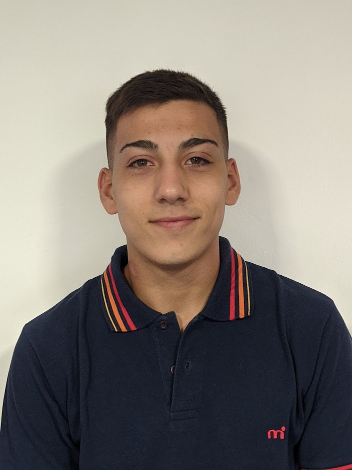

NOMBRE Y APELLIDO: Mauro Servin

Edad: 20
Domicilio: C. 874 4873
IDIOMAS:
- Español: Nativo
- Inglés: Avanzado
ESTUDIOS
E.E.S.T. N°2
U.T.N. Bs. As.
SOBRE MI:
Estudiante de programación. Me considero una persona responsable, ordenada y proactiva.
Perfil de LinkedIn:
AQUÍ